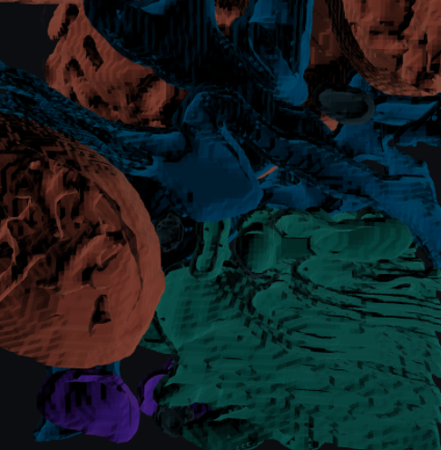
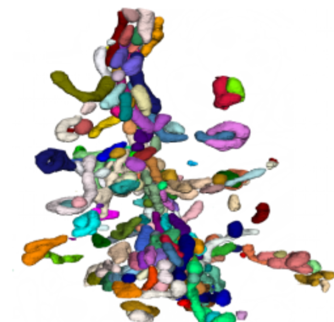
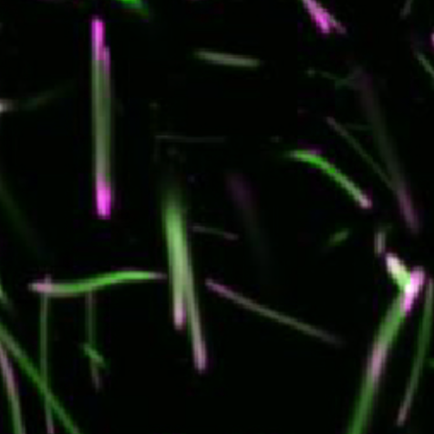

What seg.bio can segment
Seven object classes across blood vessel, neuron, organelle, nuclei, synapse, mitochondria, and fiber — each backed by a leading benchmark or curated ground-truth dataset.
| Object | Example | Source | Result |
|---|---|---|---|
| Blood vessel |  |
MICrONS 1mm³ | GT curation |
| Pulmonary Tree | GT curation | ||
| Neuron |  |
NISB Challenge | 1st placebase track |
| AxonEM Challenge | GT curation | ||
| Pan-organelle |  |
CellMap Challenge | 1st place |
| Nuclei |  |
FAFB · MICrONS 1mm³ | GT curation |
| NucMM Challenge | GT curation | ||
| Synapse |  |
CREMI Challenge | 1st placecleft detection |
| Mitochondria |  |
MitoEM Challenge | GT curation |
| MitoEM 2.0 Dataset | GT curation | ||
| Fiber |  |
CytoTape | GT curation |